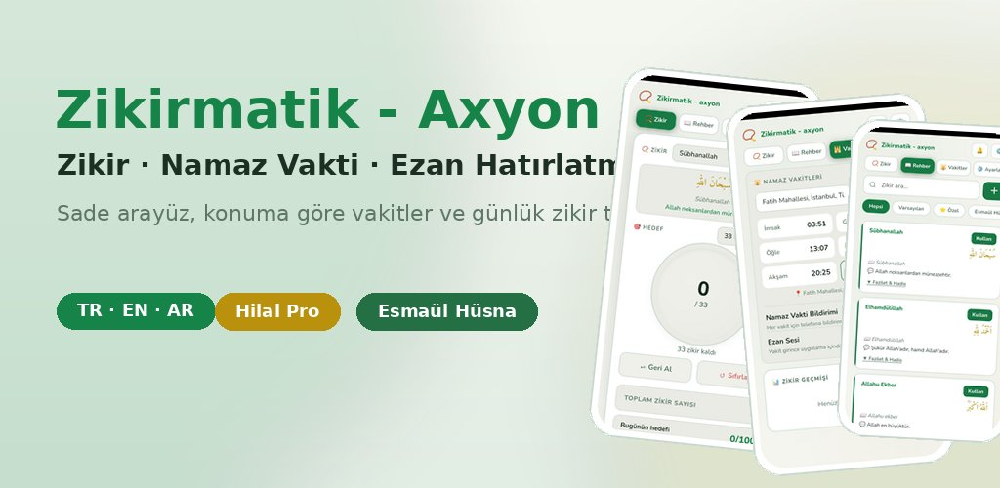
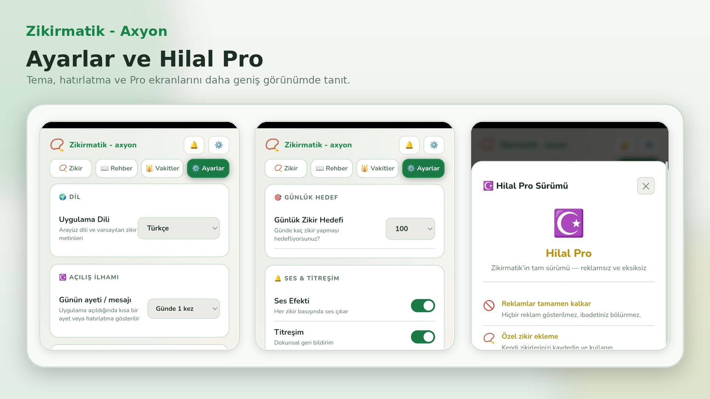
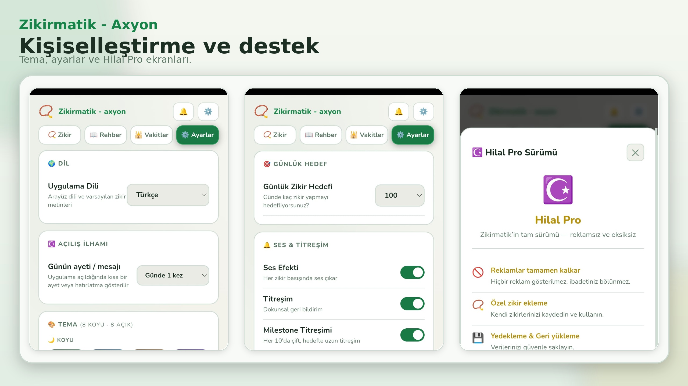

📿
Zikir sayacı
Hedef belirleyin ve ilerlemenizi takip edin.
Mobil uygulama · Android
Zikir sayacı, namaz vakitleri ve ezan hatırlatmasını tek uygulamada birleştirir.

Tek uygulamada ibadet yardımcısı
Sayaçtan vakit takibine kadar her bölüm aynı sade tasarım diliyle çalışır.
Hedef belirleyin ve ilerlemenizi takip edin.
Konuma göre vakitleri görün.
Bildirimleri yönetin.
Açıklamalı zikirleri inceleyin.
99 ismi anlamlarıyla okuyun.
Görünümü kişiselleştirin.
Ekran görüntüleri

Zikir ve rehber akışı

Namaz vakitleri ve ayarlar

Tablet görünümü ve kişiselleştirme

Hilal Pro deneyimi
Premium deneyim
Aylık, yıllık veya kalıcı seçeneklerle gelişmiş özelliklere erişin.
Gizlilik ve kontrol
Zikir kayıtları ve ayarlar cihazda saklanır.
Zikirmatik – Axyon ürün sayfasını Google Play'de açın.